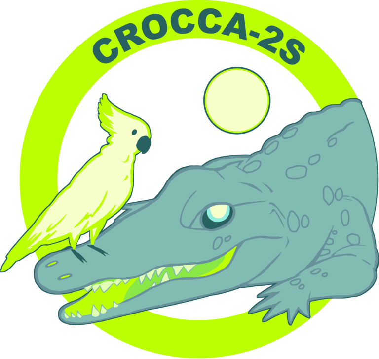
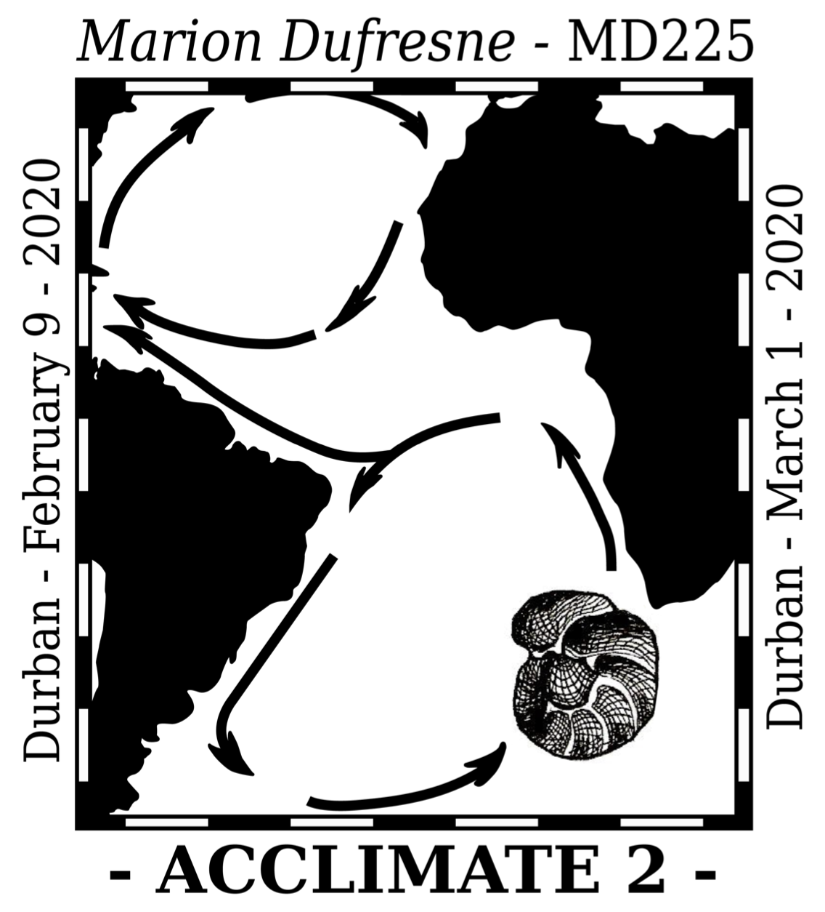
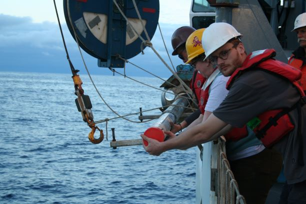
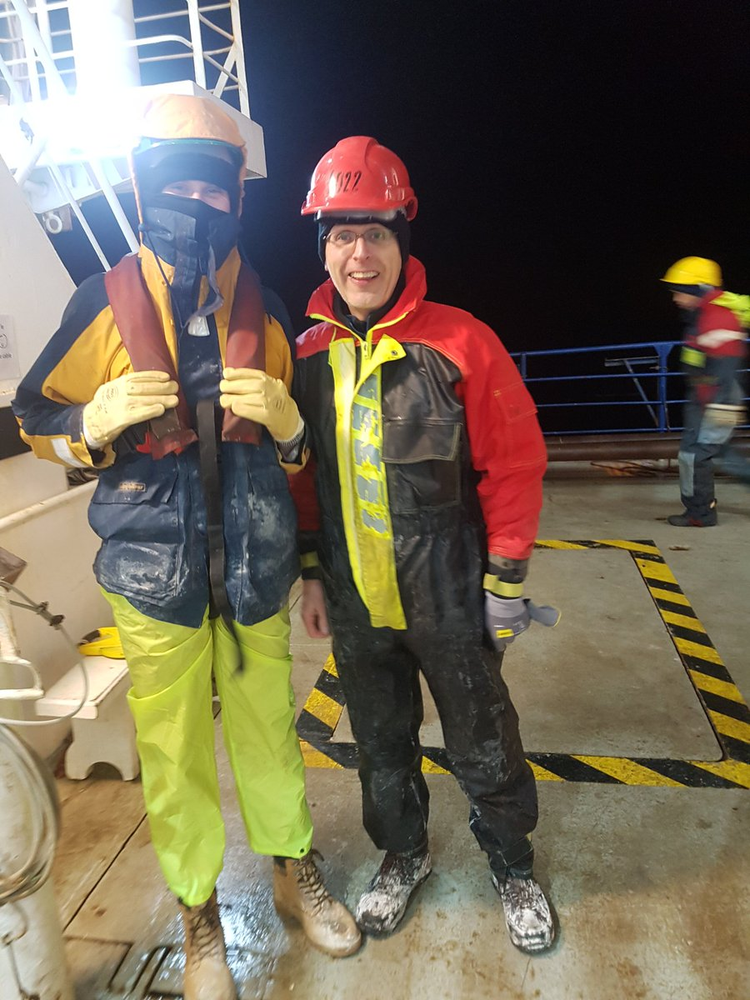
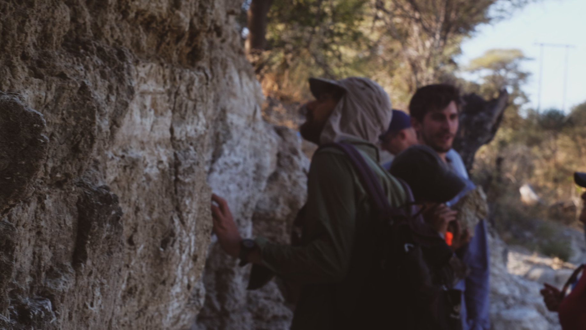

Seagoing
 CROCCA-2s
 ACCLIMATE-2
PUFFINS
Fieldwork
Southern Africa river sediment sampling #1
Southern Africa river sediment sampling #2

Coring to Reconstruct Ocean Circulation and Carbon Dioxide Across 2 Seas
2018 -- R/V Thomas G. Thompson
I sailed on the CROCCA-2s cruise (more formally known as TT1811) as a Physical Properties analyst. My responsibiltiies included measuring magnetic susceptibility, density and more on sediment cores we recovered using a Multi-Sensor Core Logger (MSCL). I also helped with preparing and deploying CTD casts and multi-cores, core description, onboard sampling and more.
Led by Prof Liz Sikes, CROCCA-2s sailed with the aim of recovering Pleistocene-Holocene age cores from a range of depths and latitudes in the Southeast Indian Ocean. Back on land, I contributed by processing and compiling MSCL and XRF core-scans, and led "Sortable Silt" for paleo-flow speed reconstructions over the last glacial cycle (Williams et al., 2021; Starr et al., in prep.).

Elucidating the Causes and Effects of Atlantic Circulation Changes through Model-Data Integration
2020 -- R/V Marion Dufresne II
The MD225 cruise (part of Claire Waelbroeck's ACCLIMATE project) sailed from Durban to Durban via the Southeast Atlantic Ocean. On the SE African margin we recovered high resolution CALYPSO cores to aid in reconstructing African paleoclimates to provide context for hominin evolution (Pryor et al., in prep.). Further south, we cored around Bouvet Island and the Agulhas Ridge.
More info on the cruise can be found here
SETTING SAIL JUNE 2022!!!

2018 -- Zambia & Botswana
Following the IODP Expedition 361 post-cruise meeting, we set out to sample river sediments from the Zambezi River catchment. This will help to constrain terrigenous sediment geochemical and petrographic end-members for the Zambezi and Limpopo Rivers, which in turn will help untangle down-core variations in sediments at IODP Expedition 361 core sites on the African margin.
This work is led primarily by Ellie Pryor as part of her PhD, contact her for more info!
2021 -- South Africa
Same as above... but a little further south.